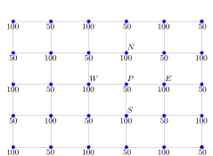

Why Staggered Grids?
Authors: Johnny Corbino, Miguel A. Dumett
Abstract: This document justifies the usage of staggered grids in mimetic differences.
Introduction
The general purpose for using staggered grids is to differentiate between (physical) quantities that utilize exterior and interior boundary orientations. Naturally, this splitting triggers the usage of a primal and a dual grids. Nevertheless, the current implementation of MOLE does not considers orientations, therefore in what follows an argument in favor of using staggered grids is given.
Justification
Mimetic difference operators are constructed for staggered grids [1].
This allows:
More accurate solutions.
Expected physical behavior (overcomes checkerboard pressure fields).
Checkerboard pressure fields
Suppose a two-dimensional incompressible flow without a body force. The governing equations are:
Equations (1)-(3) are the continuity equation, and the momentum equations in the \(x\)- and \(y\)-direction, respectively.
The checkerboard pressure field is shown in Figure 1.

Checkerboard pressure field showing the pressure oscillations
The figure represents a checkerboard pressure field.
The source term for the momentum equations in the \(x\)- and \(y\)-direction can be expressed as
respectively. If central difference is employed, the pressure gradient becomes,
and similarly,
From equations (4)-(5), we can see that the pressure gradient at point \(P\) is related to the pressures of the neighbor grid points and not to its own pressure. Therefore, if we have a pressure distribution as shown in the figure above, the discretization scheme represented by equations (4)-(5) will obtain \(\frac{\partial p}{\partial x} = 0\) and \(\frac{\partial p}{\partial y} = 0\) throughout the computational domain. This means that it will not recognize the difference between a checkerboard pressure field and a uniform pressure field. This behavior is obviously non-physical.
Staggered grids
A remedy for the aforementioned problem is to use staggered grids. The idea is to store scalar variables at the ordinary nodal points, and vector variables at the cell faces in between the nodal points.
The staggered grid arrangement is shown in Figure 2.

Staggered grid arrangement showing the location of different variables
The figure shows the new arrangement.
If we consider the checkerboard pressure field again, substitution of the appropriate nodal pressure values into equations (4)-(5) now yields very significant non-zero pressure gradient terms. The staggering of the velocity avoids the unrealistic behavior for spatially oscillating pressure fields. In addition, this new arrangement does not require interpolation to calculate velocities at the cell faces (where they are needed for the scalar transport-convection-diffusion computations.
References
J. Corbino, and J.E. Castillo, “High-order mimetic finite-difference operators satisfying the extended Gauss divergence theorem,” J. Comput. Appl. Math., vol. 364, 2020, 112326.